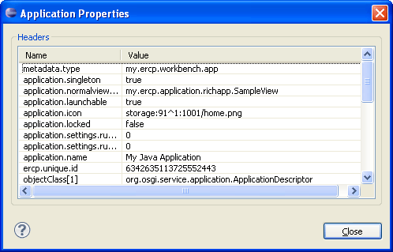

To view the properties of an application, select it from the Application node and use the Properties command from the popup menu or from the view toolbar.
The following dialog will appear:

Figure 1: Viewing application properties


Starting and Stopping Applications